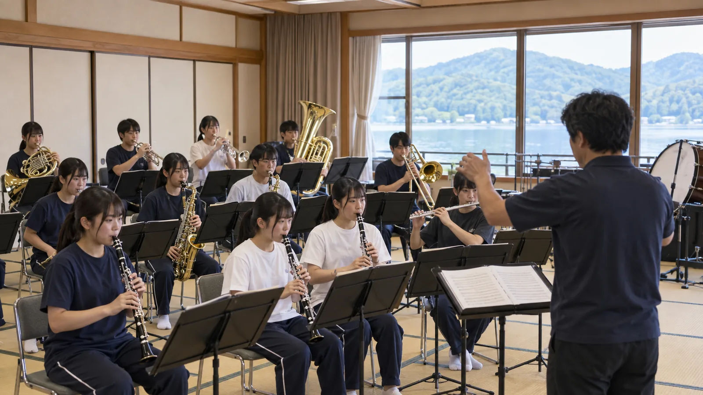
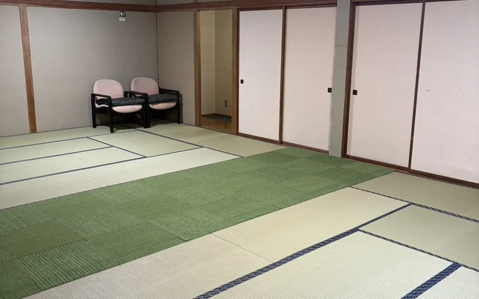
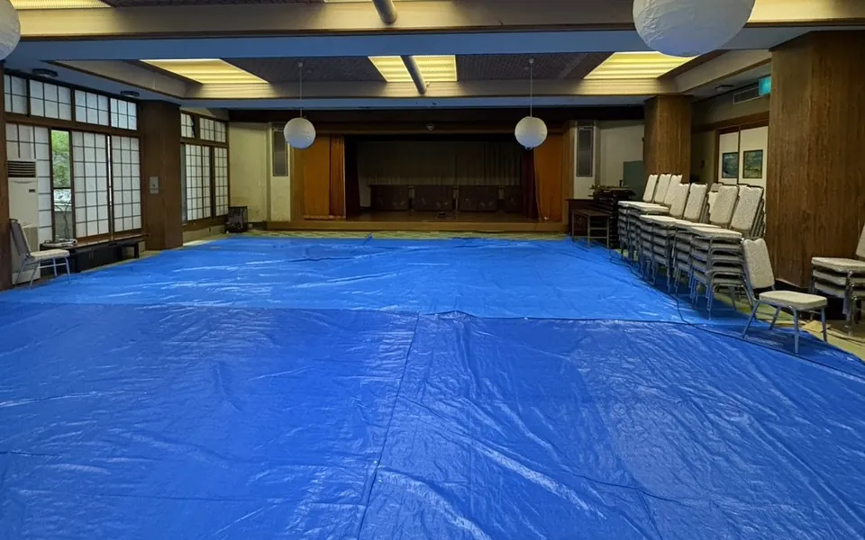
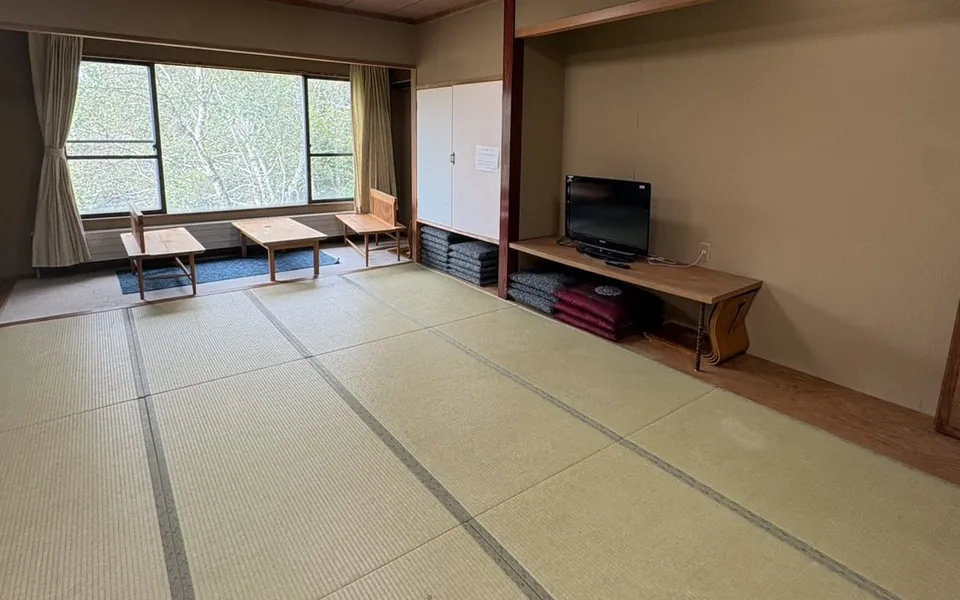
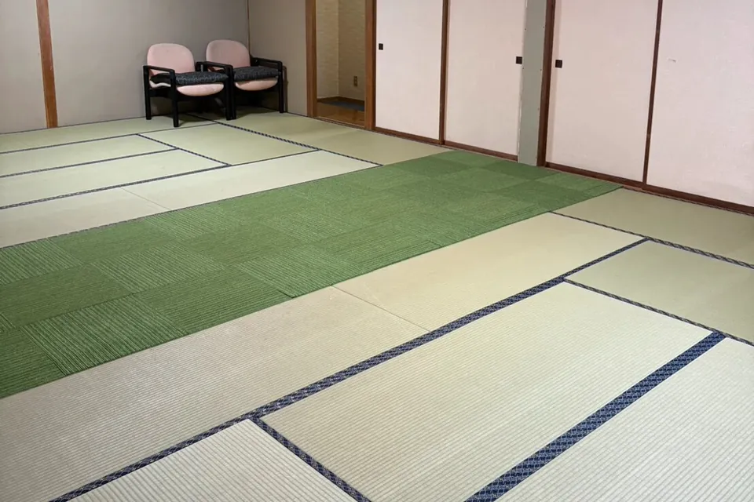
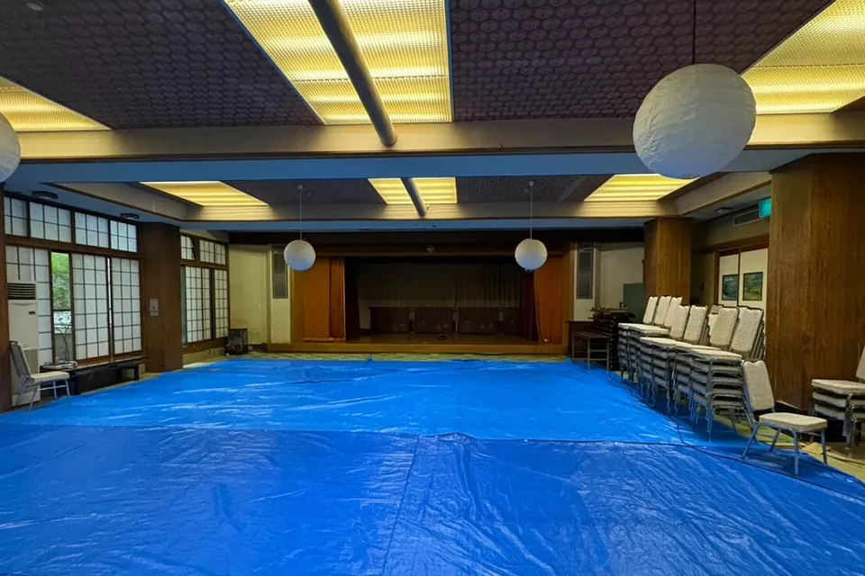
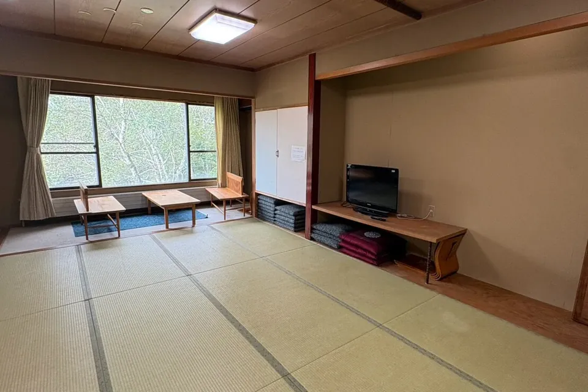

大広間（本館3階）
近隣を気にせず24時まで練習でき、パート練習用の部屋を6部屋ご用意します。大型楽器は3階へトラックを付けて搬入でき、椅子は150脚以上を貸し出し。合奏・発表会は大広間とコンベンションホール「エトワール」で。

近隣を気にせず練習できます。夜の合奏も時間を気にせず組めます。
分かれて練習できる部屋を6部屋。パートごとに同時進行できます。
大型楽器は3階にトラックを付けて、直接搬入できます。
合奏用の椅子を150脚以上貸し出せます。
大広間（本館3階）とコンベンションホール「エトワール」（本館1階）で。
MAXHUB 55型で録画を再生し、合奏の課題を共有（利用条件は要問合せ）。
山幸閣の館内写真です。部屋の割り当ては、人数・編成に合わせてご相談ください。






時刻は一例です。会場の連日の確保は事前にご相談ください。昼食の手配は要相談です。
有料コインランドリー（台数限定・洗剤はフロントで販売）と電子レンジ（本館2・3階）を館内に設置しています。連泊時の献立、客室清掃・シーツ交換の頻度、会場の連日確保などは、日程・人数に合わせてご案内します。